chasingflies.tumblr.com, 2013 to 2022. Click a print to see it big.
2013

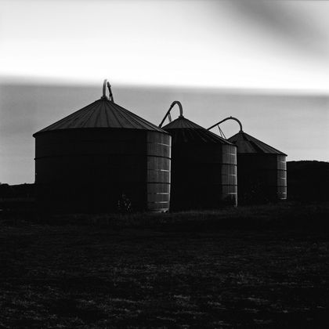

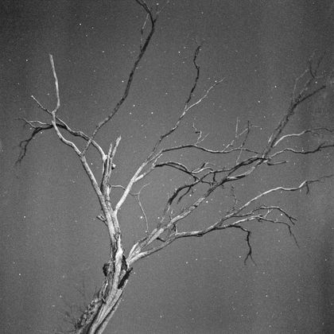

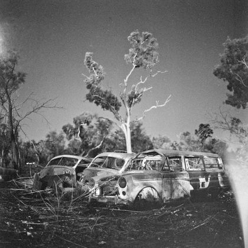

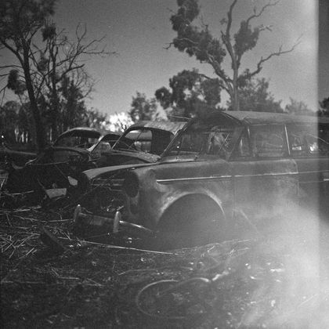


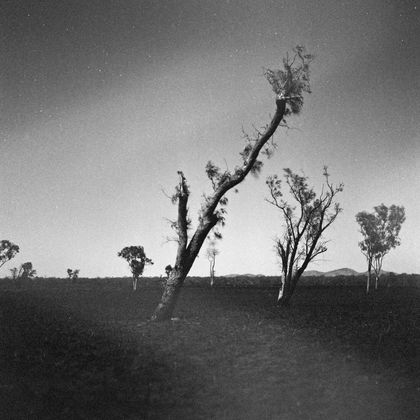

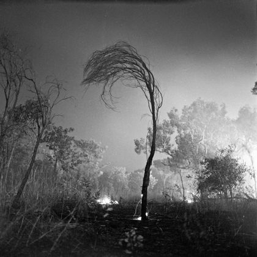

 Iceland, 2010
Iceland, 2010

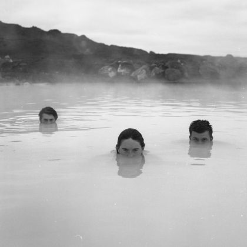


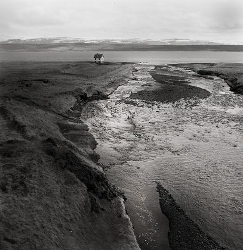

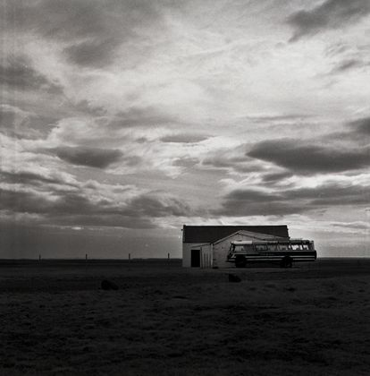

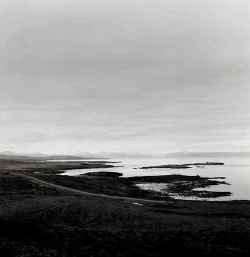

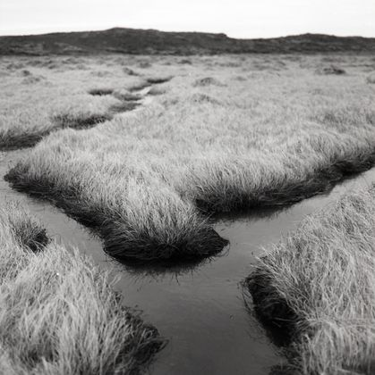


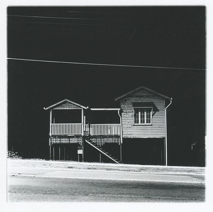
Black and White
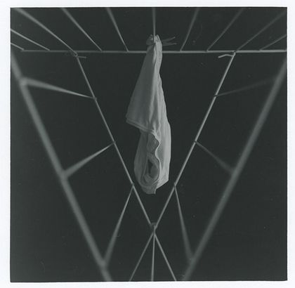
Black and White2014


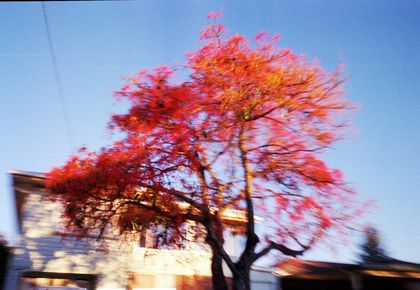


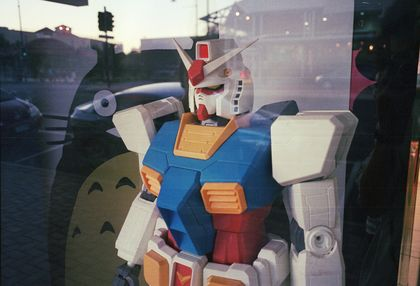


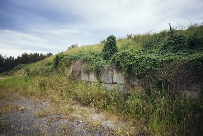
2015


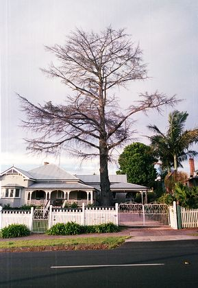

2016

 iceland
iceland
 wet season
wet season
 iceland hasselblad 6x6 film
iceland hasselblad 6x6 film
 iceland hasselblad 6x6 film
iceland hasselblad 6x6 film

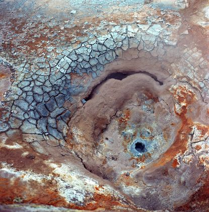
iceland hasselblad 6x6 film
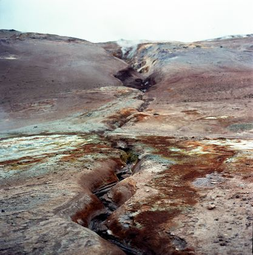
iceland hasselblad 6x6 film dinner hasselblad
lake argyle hasselblad
dinner hasselblad
lake argyle hasselblad


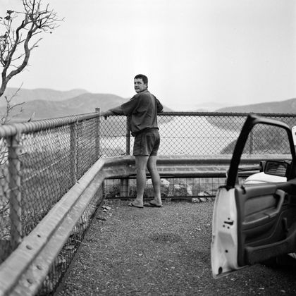
the lonely wanderer 6x6 Hasselblad new zealand
2017
 potatosalad
potatosalad
 Race Track #1
Race Track #1
2018
 Aerial IR
Aerial IR

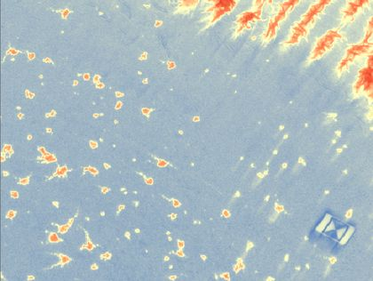
2020

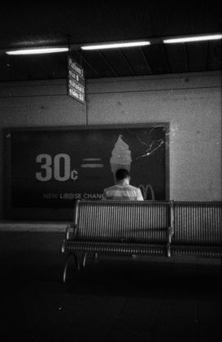
cream head2021

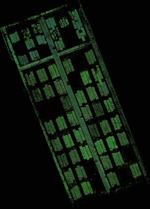
Field trials as art When tree imitates car CoincidentalColors
When tree imitates car CoincidentalColors
2022

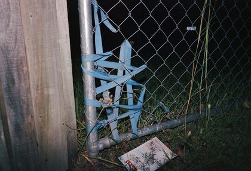